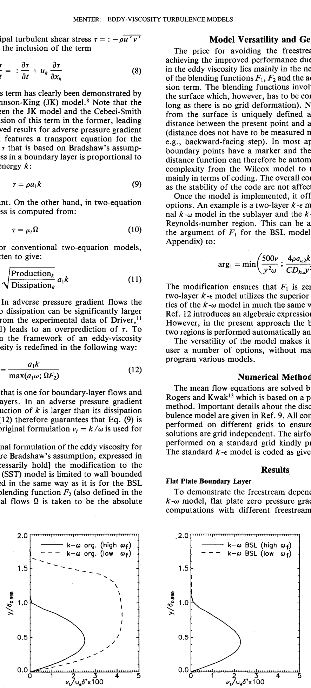
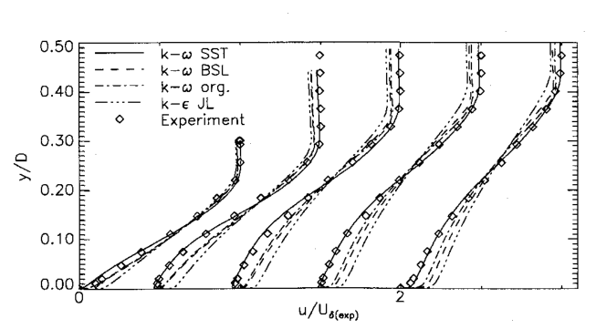
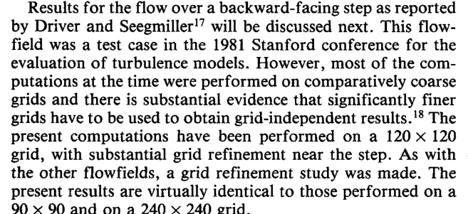
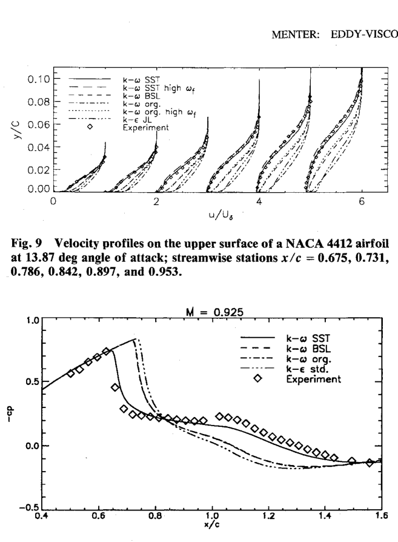

01中文摘要
本文提出两种面向工程应用的两方程涡黏湍流模型。基线（BSL）模型在边界层内层采用 Wilcox 原始 k-ω 模型，在外层和自由剪切流中切换为标准 k-ε 模型，从而避免原始 k-ω 模型对自由来流 ω 的强敏感性。第二种模型在 BSL 基础上修改涡黏定义，计入主湍流切应力的输运效应，称为切应力输运（SST）模型。文章给出模型方程、混合函数和常数，并用平板边界层、逆压梯度流动、后台阶、翼型和跨声速鼓包等算例验证，表明 SST 对逆压梯度和压力诱导分离的预测显著改善。
02阅读说明
期刊论文（理论建模+数值验证），AIAA Journal 32(8), 1994, 1598–1605，共8页。全文完整；文本层公式符号严重错乱，已对照PDF第2–3页核正式(1)–(12)、第6–7页核正附录(A1)–(A16)。抓图清单含Fig.1–Fig.10共10张，图注与页码齐全。信息完整度高；未提供网格量、时间步长等离散细节（作者指向Ref.9）。 文章类型：期刊
03一句话核心与三句话摘要
以F1混合k-ω与变换后的k-ε，并按剪切应力输运改写涡黏，提出BSL/SST模型，显著改善逆压梯度分离预测。
- 两方程涡黏模型长期无法正确预测逆压梯度流动的分离起始与分离量，k-ω模型又对自由来流ω值高度敏感，而已有模型改进缺乏统一的评价标准。 AI概括
- 作者将标准k-ε变换为k-ω形式，用F1在近壁k-ω与尾迹/自由剪切层k-ε之间混合得到BSL模型；再按Bradshaw关系τ=ρa1k把涡黏改为νt=a1k/max(a1ω,ΩF2)，得到SST模型，并用零压梯度平板、Driver逆压梯度、后台阶、NACA4412和M=0.925凸包算例验证。 原文明确
- BSL消除自由来流敏感性且边界层性能接近原k-ω；SST在逆压梯度及跨声速激波/边界层干扰中明显优于原k-ω与Jones-Launder k-ε，但所有模型都未能正确刻画再附下游的松弛。 原文明确
04核心内容清单
| 要点 | 类型 | 重要性 | 原文依据 | 属性 |
|---|---|---|---|---|
| BSL用F1混合原k-ω与变换后的k-ε：近壁和对数层用k-ω，尾迹与自由剪切层用k-ε。 | 模型构造 | A | 第1599–1600页，式(1)–(7) | 原文明确 |
| BSL保留k-ω的边界层精度并消除自由来流敏感性：ωf降低四个量级时原模型涡黏变化近100%，BSL曲线重合。 | 关键结果 | A | 第1601页，Fig.1及正文 | 原文明确 |
| 标准两方程涡黏关系在逆压梯度下违反Bradshaw关系τ=ρa1k，因为P/ε>1会高估τ。 | 机制 | A | 第1600页，式(9)–(11) | 原文明确 |
| SST将涡黏改为νt=a1k/max(a1ω,ΩF2)，F2把修正限制在壁面流动，自由剪切层恢复νt=k/ω。 | 模型构造 | A | 第1600页，式(12)、第1604页式(A14)–(A16) | 原文明确 |
| Driver逆压梯度流中SST预测最大分离，壁压与速度剖面最优；JL k-ε最差且几乎不分离。 | 验证结果 | A | 第1601页，Fig.2–Fig.4 | 原文明确 |
| 后台阶再附长度：SST 6.5、BSL 5.9、原k-ω 6.4、JL k-ε 5.5，实验约6.4。 | 定量对比 | A | 第1602页，Fig.7 | 原文明确 |
| 所有模型都未能正确捕捉再附下游的松弛过程。 | 模型局限 | B | 第1602页，Fig.8及正文 | 原文明确 |
| NACA4412上SST最好；原k-ω因自由来流依赖，速度剖面比JL k-ε更偏离实验。 | 验证结果 | A | 第1602–1603页，Fig.9 | 原文明确 |
| M=0.925跨声速凸包算例中SST因改进的输运特性明显优于其他模型。 | 验证结果 | A | 第1603页，Fig.10 | 原文明确 |
| 相对原k-ω，新模型增加的代价主要是编码复杂度；总计算时间与代码稳定性不受影响。 | 工程代价 | B | 第1600页，Model Versatility and Generality节 | 原文明确 |
| 作者主张湍流模型必须在大量有挑战性的流动上严格检验，理论工具不足以确定常数。 | 方法论观点 | B | 第1598、1603页 | 原文明确 |
05引言：研究问题与领域缺口
【原文明确】作者从工程应用角度审视两方程涡黏模型，指出其核心缺陷是低估或错判逆压梯度流动的分离起始与分离量，且模型常数微小变化（5%–10%）即可显著改变预测，而量纲分析、渐近展开、DNS数据、RNG、快速畸变理论等均不足以把常数定到所需精度。k-ω模型在近壁、对数层及可压缩平衡流中表现好、无阻尼函数、数值稳定，但对边界层外自由来流ωf极敏感；k-ε模型在尾迹和自由剪切层更合适且无此敏感性。作者的目标是经验性地组合已有模型的“最佳元素”：近壁用Wilcox k-ω，外层尾迹与自由剪切层用标准k-ε；并进一步引入Johnson-King所强调的主湍流剪切应力输运，以改善强逆压梯度预测。适用边界为附着/分离的二维及轴对称湍流边界层与自由剪切层，不涉及转捩建模。
06流动条件与几何构型
| 项目 | 数值/描述 | 依据 | 备注 |
|---|---|---|---|
| 零压梯度平板边界层（自由来流敏感性） | 两组自由来流ωf：第一组按Ref.6给定正确值；第二组降低四个量级，同时降低k以保持自由来流涡黏不变 | 第1601页，Fig.1讨论 | 仅给相对变化，未给具体ωf数值 |
| Driver逆压梯度流动 | Re=2.8×10^5，基于圆柱直径D=140 mm；来流为圆柱轴向湍流边界层，由扩张壁面与抽吸施加逆压梯度 | 第1601页 | 60×3×60网格；100×3×100网格结果几乎相同 |
| Samuel-Joubert逆压梯度流动 | 结果见Ref.9，本文因篇幅未复现 | 第1601页 | 作者认为该流动挑战性不足，无法区分模型 |
| 后台阶流动（Driver-Seegmiller） | 120×120网格，台阶附近显著加密；90×90与240×240网格结果几乎一致 | 第1602页 | 1981 Stanford会议算例；作者强调粗网格不足 |
| NACA4412翼型 | 攻角13.87°，基于弦长Re=1.52×10^6；241×61网格 | 第1602页 | 实验数据来自Coles-Wadcock |
| 轴对称跨声速凸包（Bachalo-Johnson） | M=0.925；150×3×80网格；129×3×60与180×3×100验证网格无关 | 第1603页 | 只展示最高马赫数工况 |
| 自由剪切层 | F1=0、F2=0，BSL与SST退化为标准k-ε；结果见Ref.9，本文未展示 | 第1601页 | 用于说明模型在无壁面区域的退化行为 |
07核心现象与关键参数
| 参数 | 定义 | 数值 | 关系/说明 | 依据 |
|---|---|---|---|---|
| 后台阶再附长度 x_r/H | 壁面摩阻由负转正的位置，以来流台阶高度H无量纲化 | SST 6.5；BSL 5.9；原k-ω 6.4；JL k-ε 5.5；实验约6.4 | SST最接近实验，k-ω族均优于JL k-ε | 第1602页，Fig.7及正文 |
| 自由来流ωf变化引起的涡黏变化 | 边界层内涡黏剖面对自由来流ωf的敏感性 | ωf降低四个量级：原k-ω涡黏改变近100%；BSL两组结果相同 | 用于量化freestream dependency | 第1601页，Fig.1 |
| a1 | Bradshaw关系τ=ρa1k中的常数 | 0.31（SST inner set） | SST涡黏νt=a1k/max(a1ω,ΩF2)的分子系数 | 第1604页，式(A13) |
| β* | k-ω模型中ω方程耗散项系数 | 0.09 | k-ε变换与γ定义共用 | 第1603页，式(A4)–(A5) |
| κ | von Kármán常数 | 0.41 | γ1=β1/β*−σω1κ²/√β*；γ2同理 | 第1603页，式(A4)–(A5) |
| Wilcox常数集（set 1） | 原k-ω模型常数 | σk1=0.5，σω1=0.5，β1=0.0750，β*=0.09，κ=0.41 | γ1=β1/β*−σω1κ²/√β* | 第1603页，式(A4) |
| 标准k-ε常数集（set 2） | 变换后k-ε模型常数 | σk2=1.0，σω2=0.856，β2=0.0828，β*=0.09，κ=0.41 | γ2=β2/β*−σω2κ²/√β* | 第1603页，式(A5) |
| SST内层常数集 | SST模型set 1 | σk1=0.85，σω1=0.5，β1=0.0750，a1=0.31 | β*=0.09，κ=0.41，γ1=β1/β*−σω1κ²/√β* | 第1604页，式(A13) |
| Clauser平衡边界层常数 | 平衡边界层最大涡黏的推荐值 | 0.0168 | 用于评价Fig.6中涡黏水平；JL k-ε仅略低于该值 | 第1602页 |
| 壁面ω边界条件 | y=0处的Dirichlet条件 | ω=10·6ν/[β1(Δy1)²]，Δy1为离开壁面第一层网格间距 | 当4y1+<3时模拟光滑壁条件 | 第1604页，式(A12) |
08方法与数据
【原文明确】以Wilcox原k-ω方程(1)–(2)为近壁基础；把标准高雷诺数k-ε写成k-ω形式(3)–(4)，变换中多出交叉扩散项并采用不同常数，另有一个小扩散项被略去（Ref.9称其影响可忽略）；将原模型乘F1、变换模型乘(1−F1)相加得BSL方程(5)–(6)，常数按φ=F1φ1+(1−F1)φ2混合(7)。SST在此基础上把涡黏改为νt=a1k/max(a1ω,ΩF2)(12)，F2在边界层为1、自由剪切层为0。平均流用Rogers-Kwak的INS3D伪压缩性求解器，湍流离散细节见Ref.9；所有算例均在多套网格上验证网格无关性。对比模型为原k-ω、BSL、SST与Jones-Launder k-ε。
| 项目 | 内容 | 依据 | 备注 |
|---|---|---|---|
| 总体方法 | 两方程涡黏湍流模型的理论构造 + 二维/轴对称RANS数值验证 | 第1598–1603页 | 纯经验建模路线 |
| 平均流求解器 | Rogers-Kwak INS3D，基于伪压缩性方法 | 第1600页，Numerical Method节 | 湍流模型离散细节见Ref.9 |
| BSL构造 | 原k-ω式(1)–(2)乘F1，k-ε变换式(3)–(4)乘(1−F1)，相加得式(5)–(6) | 第1599–1600页，式(1)–(7) | 变换中略去一个小附加扩散项 |
| SST构造 | νt=a1k/max(a1ω,ΩF2)；F2=tanh(arg2²)，arg2=max(2√k/(0.09ωy),500ν/(y²ω)) | 第1600页式(12)、第1604页式(A14)–(A16) | Ω取涡量绝对值 |
| F1定义 | F1=tanh(arg1⁴)，arg1=min[max(√k/(0.09ωy),500ν/(y²ω)),4ρσω2k/(CDkωy²)]，CDkω=max(2ρσω2(1/ω)(∂k/∂xj)(∂ω/∂xj),10^-20) | 第1604页，式(A8)–(A10) | y为到最近壁面的距离 |
| 网格无关性 | 所有计算均在多套网格上进行；Driver 60×3×60与100×3×100，后台阶120×120与90×90、240×240，凸包150×3×80与129×3×60、180×3×100 | 第1601–1603页 | 作者称结果网格无关 |
| 对比模型 | 原Wilcox k-ω、BSL、SST、Jones-Launder k-ε | 第1601–1603页各算例 | 部分算例还引用Baldwin-Barth结果作参照 |
| 自由来流与壁面条件 | ω∞=10U∞/L，k∞=ν∞ω∞；壁面ω按式(A12) | 第1604页，式(A11)–(A12) | νt∞的具体系数受扫描清晰度限制，无法确认 |
09核心推导与公式
先把标准k-ε改写为k-ω形式，利用ε=β*ωk引入交叉扩散项，再按F1在近壁k-ω与外层k-ε之间线性混合；随后用Bradshaw剪切应力关系改造涡黏，使强逆压梯度下涡黏不再由τ=μtΩ系统性高估。
关键假设
- Boussinesq涡黏假设，湍流各向同性标量涡黏
- 充分湍流、高雷诺数；k-ε采用标准高雷诺数版本
- k-ω在粘性底层与对数层有效，k-ε在尾迹与自由剪切层有效
- 变换k-ε时略去一个小附加扩散项，认为其影响可忽略
- Bradshaw关系τ=ρa1k在附着边界层尾迹区成立
- 常数按F1线性混合，即φ=F1φ1+(1−F1)φ2
推导过程
以Wilcox原k-ω为近壁基础，k与ω方程含产生项、耗散项和有效扩散项，扩散系数为μ+σkμt、μ+σωμt。
用ε=β*ωk消去ε，k方程形式不变但常数改为set 2；ω方程多出与∂k/∂xj、∂ω/∂xj成正比的交叉扩散项，这是k-ε与k-ω形式差异的核心。
式(1)(2)乘F1，式(3)(4)乘(1−F1)，对应方程相加，得到BSL模型；F1在近壁为1、远离壁面渐变为0，切换发生在边界层尾迹区。
把主湍流剪切应力的物质导数写成当地变化加对流项，强调τ具有输运与滞后；Johnson-King模型正是靠这一项改善逆压梯度预测。
Bradshaw假设边界层内τ=ρa1k；常规两方程模型却用τ=μtΩ。把后者改写为τ=ρ√(Pk/Dk)a1k后可见，逆压梯度下P/ε>1会使τ被高估。
为使式(9)在涡黏框架内成立，把νt改为a1k/max(a1ω,ΩF2)。逆压梯度边界层中Ω>a1ω，νt被压低；自由剪切层F2=0，恢复νt=k/ω。
两套常数按式(7)混合；F1由三个参数取最小再取最大构造，分别表征湍流尺度/y、粘性底层判据和防止自由来流退化解；壁面ω用Dirichlet条件，自由来流按ω∞=10U∞/L给定。
适用边界：推导本身是形式变换与经验混合，不含可证明的普适性；交叉扩散项来自k-ε变换，混合函数F1/F2的构造是经验性的；Bradshaw关系只在附着边界层尾迹区成立，SST用F2排除自由剪切层；模型仍为各向同性涡黏，不能描述雷诺应力各向异性；常数由少量算例整定，作者明确其精度受5%–10%常数变化影响；未处理转捩、可压缩修正、粗糙壁与质量注入的验证。
10结果：主要发现与关键证据
【原文明确】零压梯度平板：自由来流ωf降低四个量级（k同步调整以保持自由来流涡黏不变）时，原k-ω的涡黏改变近100%，BSL结果完全重合（Fig.1，第1601页）。Driver逆压梯度流（Re=2.8×10^5，基于直径D=140 mm；60×3×60网格，100×3×100复核）：SST因计入主剪切应力输运，壁压、壁剪应力与速度剖面均最优，并预测最大分离；BSL与原k-ω居中且彼此接近；JL k-ε最差、几乎保持附着（Fig.2–4，第1601页）。后台阶（Driver-Seegmiller，120×120网格，90×90与240×240复核）：再附长度SST 6.5、BSL 5.9、原k-ω 6.4、JL k-ε 5.5，实验约6.4（Fig.7，第1602页）。NACA4412（α=13.87°，Re=1.52×10^6，241×61）：SST位移效应与实验最吻合；原k-ω因自由来流依赖反而比JL k-ε更差（Fig.9，第1602–1603页）。M=0.925轴对称跨声速凸包（Bachalo-Johnson，150×3×80，129×3×60与180×3×100复核）：SST明显优于其他模型（Fig.10，第1603页）。
| 发现 | 证据 | 证据类型 | 强度 | 位置 | 属性 |
|---|---|---|---|---|---|
| BSL在保持k-ω边界层性能的同时消除自由来流敏感性 | ωf降低四个量级、k同步调整时，原k-ω涡黏剖面改变近100%，BSL两组曲线完全重合（Fig.1） | 数值实验 | 强 | 第1601页，Fig.1及正文 | 原文明确 |
| SST在Driver逆压梯度流中给出最优壁压、壁剪应力与速度剖面，并预测最大分离 | SST壁压平台最接近实验；SST壁剪应力分离区最大；速度剖面位移效应与实验最吻合；JL k-ε几乎不分离（Fig.2–4） | 算例对比 | 强 | 第1601页，Fig.2–Fig.4 | 原文明确 |
| k-ω族在后台阶再附长度上明显优于JL k-ε，SST最接近实验 | x_r/H：SST 6.5、BSL 5.9、原k-ω 6.4、JL k-ε 5.5，实验约6.4（Fig.7） | 定量对比 | 强 | 第1602页，Fig.7 | 原文明确 |
| 所有模型都不能正确刻画再附下游的松弛 | Fig.8速度剖面在再附后普遍偏离实验；作者引Ref.19称考虑各向异性的更复杂模型亦如此 | 模型局限 | 中 | 第1602页，Fig.8 | 原文明确 |
| SST在NACA4412与M=0.925跨声速凸包上均最优 | NACA4412上SST位移效应与实验最吻合（Fig.9）；凸包壁压分布SST明显优于其他模型（Fig.10） | 算例对比 | 强 | 第1602–1603页，Fig.9–Fig.10 | 原文明确 |
| 原k-ω在NACA4412上因自由来流依赖，速度剖面反而比JL k-ε更差 | 高ωf与低ωf计算差异显著；SST对ωf不敏感；原k-ω高ωf结果接近BSL，说明其偏差来自自由来流退化解 | 机制验证 | 中 | 第1602–1603页，Fig.9 | 原文明确 |
| 新模型增加的仅是编码复杂度，计算时间与稳定性基本不变 | 作者称总计算时间与代码稳定性不受影响；F1/F2所需壁面距离只需计算一次（无网格变形时） | 工程评价 | 中 | 第1600页 | 原文明确 |
11机制解释与论证链
【原文明确】论证链为：两方程模型只向平均流提供标量涡黏；在逆压梯度边界层尾迹区，湍动能产生大于耗散（P/ε>1），由τ=μtΩ=ρ√(P/ε)a1k可知标准涡黏必然高估主剪切应力，进而抑制分离；Johnson-King模型通过主剪切应力输运方程引入滞后并改善预测。SST据此在Ω>a1ω时把νt压到a1k/(ΩF2)，使τ回到Bradshaw关系ρa1k；F2在自由剪切层为0，恢复原νt=k/ω，避免破坏自由剪切层性能。BSL则解决另一条链：k-ω的涡黏由k/ω决定，而外层ω受自由来流ωf支配，故原模型对ωf敏感；改用k-ε的ω方程后，外层涡黏不再依赖ωf。【AI推断】这解释了为何SST在Driver流中预测更大分离、壁压平台更接近实验，但原文没有给出剪切应力或湍动能收支的逐项定量分解。
12讨论：结论、贡献与局限
【原文明确】作者把强逆压梯度预测能力归因于边界层尾迹区的涡黏水平，而非对数层；标准涡黏关系τ=μtΩ=ρ√(P/ε)a1k在P/ε>1时必然高估τ，从而抑制分离；Johnson-King模型通过输运主剪切应力修正这一点。SST据此在Ω>a1ω时压低νt、恢复Bradshaw关系，并用F2保证自由剪切层仍用νt=k/ω。【AI推断】这解释了SST在Driver流中预测更大分离且更贴近实验，但原文未给出剪切应力或湍动能收支的逐项定量证据。作者还强调模型纯经验、需在大量流动上严格检验，三维复杂流动仅引用早期测试（Ref.24），跨声速详细对比留待后续。
作者结论
【原文明确】作者在纯经验基础上提出两个模型：BSL把Wilcox k-ω（近壁、对数层）与变换后的标准k-ε（尾迹、自由剪切层）用F1混合，性能接近原k-ω但消除自由来流敏感性；SST进一步修正涡黏以计入主剪切应力输运，对所有含逆压梯度的流动均有显著改善，作者称其为当时唯一能准确预测压力诱导分离及粘性-无粘干扰的两方程模型。两模型已用大量挑战性流动整定与验证；SST应作为气动应用的首选。
主要贡献
- 提出BSL混合模型，给出k-ε到k-ω的完整变换与常数混合规则
- 提出SST涡黏公式νt=a1k/max(a1ω,ΩF2)，把Bradshaw关系嵌入两方程框架
- 给出F1、F2、交叉扩散项、壁面与自由来流边界的完整可实现形式
- 用五类典型流动系统对比原k-ω、BSL、SST与JL k-ε，提供工程选型依据
局限与未解决问题
【作者承认】模型完全经验，需在大量流动上严格检验；三维复杂流动仅引用早期测试（Ref.24），仍需更多验证；跨声速流动只展示M=0.925一个工况，详细对比留待后续；Samuel-Joubert等流动因篇幅未复现。【AI识别】验证均为二维或轴对称，未含真正三维分离、角区、强曲率；未评估转捩、粗糙壁、质量注入、壁面热流；常数由少量算例整定，外推性未知；模型为各向同性涡黏，无法描述雷诺应力各向异性，故再附下游松弛普遍失败；网格规模以当时标准偏小；“唯一能准确预测压力诱导分离”的断言具有时代局限。
13对高速流动与工程的意义
【原文明确】为工程CFD提供了兼顾近壁精度与自由来流鲁棒性的两方程模型，尤其适合逆压梯度、压力诱导分离与跨声速激波/边界层干扰的RANS计算；BSL/SST后来成为气动设计中的常用基线模型。【AI推断】对SBLI研究而言，本文提供了“分离起始与分离量预测”的模型基础：SST在Driver流和后台阶上的表现说明其对强逆压梯度的涡黏抑制机制可用于进气道、隔离器、叶栅等含分离干扰的工程估算；但其各向同性假设与再附松弛缺陷意味着不能用于需要精确雷诺应力结构的机理研究。
14核心图件




15可引用原文素材
| 原文短句 | 可支持的观点 | 位置 | 使用建议 |
|---|---|---|---|
| “avoids that model's strong freestream sensitivity” | BSL相对原k-ω的核心改进 | 摘要，第1598页 | 引言中说明BSL动机 |
| “the SST model predicts the largest amount of separation” | SST对分离量的预测能力 | 第1601页，Fig.3讨论 | 对比模型分离预测时引用 |
| “the SST model clearly produces the best agreement with the experiments” | SST在Driver流速度剖面上的优势 | 第1601页，Fig.4讨论 | 验证SST逆压梯度性能 |
| “All models fail to capture the relaxation downstream of reattachment correctly.” | 现有两方程模型的共同局限 | 第1602页，Fig.8讨论 | 指出再附下游建模缺口 |
| “the JL k-ε model produces the least accurate results” | JL k-ε在强逆压梯度下的不足 | 第1601页，Fig.2讨论 | 说明k-ε不适合压力诱导分离 |
| “The overall computing time, as well as the stability of the code are not affected.” | 新模型的工程可行性 | 第1600页，Model Versatility and Generality节 | 评估计算代价 |
| “a turbulence model has to be tested rigorously for a large number of flows” | 作者的经验建模方法论 | 第1603页，Conclusions | 讨论模型验证标准 |
| “This example clearly shows the dangers of using the original k-ω model for industrial applications.” | 原k-ω自由来流依赖的工程风险 | 第1603页，NACA4412讨论 | 说明为何需要BSL/SST |
16最终核验
| 核验项 | 结论 |
|---|---|
| 仅基于全文 | 是。仅使用bundle文本、图注与PDF第2–3、6–7页公式核对，未引入外部文献或数据。 |
| A 级要点有依据 | 是。全部A级要点均可回查到具体页码、公式或图号：BSL/SST构造对应式(1)–(12)、(A1)–(A16)；定量对比对应Fig.1、Fig.7及正文数字。 |
| 属性标注 | 是。three_sentence、core_points、findings及正文说明均标注【原文明确】【AI概括】【AI推断】；机制段中的因果链与SBLI意义已标为AI推断。 |
| 覆盖范围 | 全文8页全部读取；10张抓图对应Fig.1–Fig.10；IMRaD四节、工况、参数、方法、推导、发现、结论、局限、引文均已覆盖。 |
| 无编造 | 未编造页码、图号、公式或数据；νt∞系数因扫描不清写“无法确认”；Fig.6最大涡黏数值正文未给，故未填具体值；网格量与时间步长文中未提及，已注明指向Ref.9。 |
需回原文确认
- 附录式(A11)中自由来流涡黏νt∞的系数受扫描清晰度限制，无法确认，是否需回原PDF核对？
- 文中提到NACA4412上SST结果的小变化可能源于对转捩行为的轻微影响，但未量化，转捩敏感性有多大？
- SST与BSL在三维分离、角区流动中的表现仅引Ref.24，缺少本文数据，适用性如何？
- 模型未包含可压缩修正，在M>1强激波干扰下常数是否需要调整？文中未提及。
- Fig.6给出的最大涡黏仅以图形式呈现，正文未列数值，定量比较受限。
- 后台阶再附下游松弛失败的机制，作者归因于各向异性，但未给出应力分量证据。
17关联文献
依据标签、板块、构型与作者脉络自动关联，可据此追踪同一问题的前序与后续工作。
18引用格式
选择期刊风格后复制；出处保留原刊名。BibTeX 可直接用于 LaTeX。
引用格式
Menter, F. R. 1994 Two-equation eddy-viscosity turbulence models for engineering applications. AIAA Journal. https://doi.org/10.2514/3.12149
PDF上传 PDF 并更新本页
本页缺少全文、摘要或图件时，可在浏览器本地补入 PDF。解析完全在本机完成，不上传网络；完成后会更新本页的 PDF 打开链接、原摘要、IMRaD 机器抽取、关键句与含图页面。复杂的公式语义与中文深度解读仍以原文和既有精读记录为准。